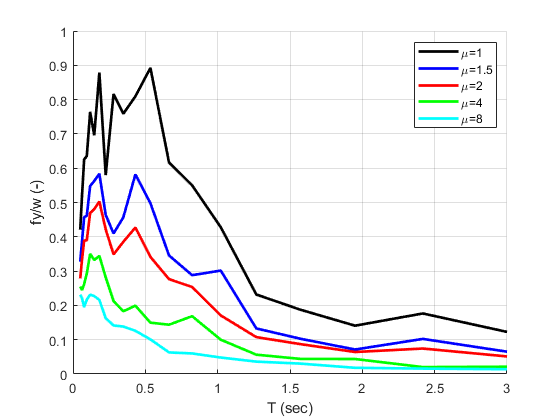

verification Constant ductility response spectrum
Contents
Reference
Chopra, A. K. (2020). Dynamics of structures, Theory and Applications to Earthquake Engineering, 5th edition. Prenctice Hall.
Description
The constant-ductility response spectra of Figure 7.5.2 of the above reference are verified. Elastic-perfectly plastic systems are considered. Damping is equal to 5% of its critical value. Target ductility factors equal to 1,1.5,2,4 and 8 are considered.
Load earthquake data
Earthquake acceleration time history of the El Centro earthquake will be used (El Centro, 1940, El Centro Terminal Substation Building)
fid=fopen('elcentro_NS_trunc.dat','r'); text=textscan(fid,'%f %f'); fclose(fid); t=text{1,1}; dt=t(2)-t(1); xgtt=text{1,2};
Calculate constant ductility response spectra of earthquake motion
Switch
sw='cdrs';
Eigenperiods
T=logspace(log10(0.05),log10(3),20);
Critical damping ratio
ksi=0.05;
Ductilities
mu1=1; mu2=1.5; mu3=2; mu4=4; mu5=8;
Post-yield stiffness factor
pysf=0.001;
Apply OpenSeismoMatlab once for each target ductility value
S1=OpenSeismoMatlab(dt,xgtt,sw,T,ksi,mu1,pysf); S2=OpenSeismoMatlab(dt,xgtt,sw,T,ksi,mu2,pysf); S3=OpenSeismoMatlab(dt,xgtt,sw,T,ksi,mu3,pysf); S4=OpenSeismoMatlab(dt,xgtt,sw,T,ksi,mu4,pysf); S5=OpenSeismoMatlab(dt,xgtt,sw,T,ksi,mu5,pysf);
Plot the constant ductility response spectra
Initialize figure
figure() hold on % Plot the constant ductility response spectra plot(S1.Period,S1.fyK/9.81, 'k-', 'LineWidth', 2) plot(S2.Period,S2.fyK/9.81, 'b-', 'LineWidth', 2) plot(S3.Period,S3.fyK/9.81, 'r-', 'LineWidth', 2) plot(S4.Period,S4.fyK/9.81, 'g-', 'LineWidth', 2) plot(S5.Period,S5.fyK/9.81, 'c-', 'LineWidth', 2) hold off % Finalize figure grid on xlabel('T (sec)') ylabel('fy/w (-)') legend({'\mu=1','\mu=1.5','\mu=2','\mu=4','\mu=8'}) xlim([0,3]) ylim([0,1]) drawnow; pause(0.1)
Copyright
Copyright (c) 2018-2023 by George Papazafeiropoulos
- Major, Infrastructure Engineer, Hellenic Air Force
- Civil Engineer, M.Sc., Ph.D.
- Email: gpapazafeiropoulos@yahoo.gr